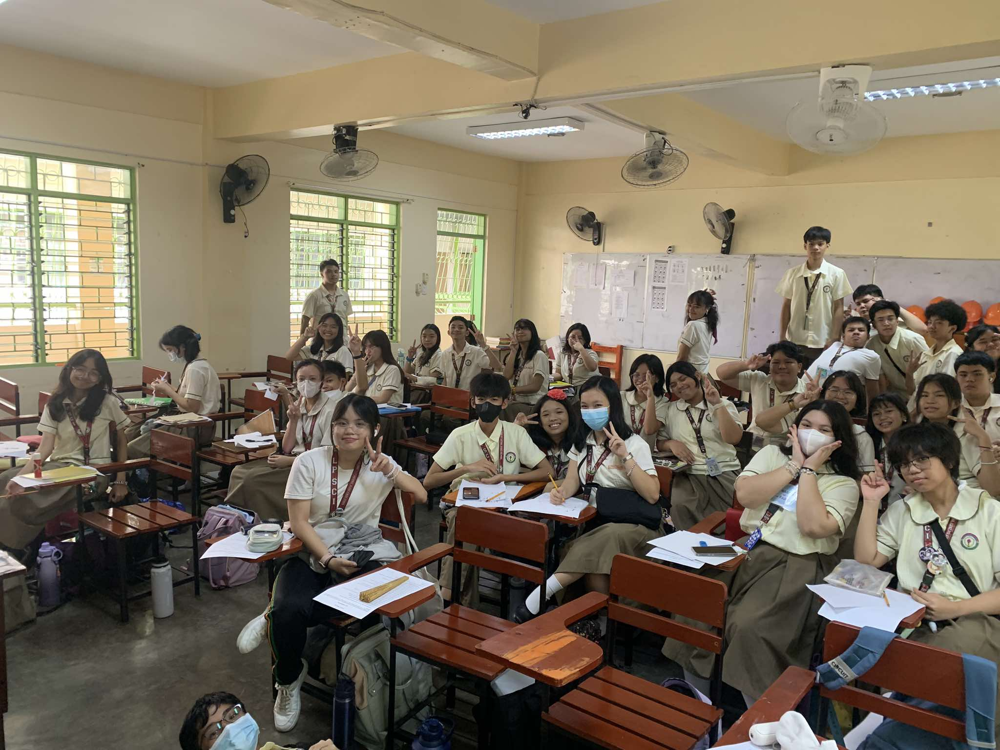
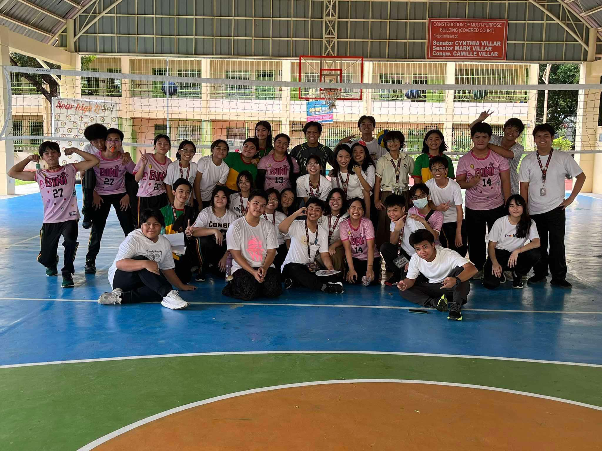

Science Performance Task Practice

- We took this photo while practicing for science role play.
(we didn't have any roles yet here in this photo.)
AP Debate Watching

- This photo was taken while we were watching the beginning of the AP ASEAN debate.
MAPEH Arts Performance Task

- Photo was captured whilst we were working on our arts performance task for MAPEH.
Suspension of Classes at School

- Taken after it was announced in the middle of science class that classes were suspended, due to Taal Volcano eruption.
LPSci Foundation Day Event

- Happened during LPSci's 15th foundation day event, when 9-Family was announces as one of the raffle winners, due to having some of the highest attendees.
Inaugral Speech Practice

- While Miss Gia was not present, we were tasked to practice for our upcoming inaugral speech/es.
Volleyball Game

- A picture, after our volleyball game for PE.
and many, many more memories!
|